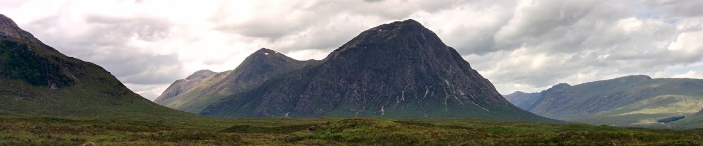

Home

Summary
I am working as a PhD researcher in the numerical analysis and applied mathematics group of the computer science department at KU Leuven. I started in September 2015 and my project is supervised by Raf Vandebril and Karl Meerbergen.
The current focus of my research is on rational Krylov methods, specifically on exploiting matrix structures to efficiently filter and restart a Krylov subspace iteration.
This personal homepage will evolve over time along with the work itself.
PhD
PhD
The research plan is to study rational Krylov subspace methods. A couple of standard papers describing the rational Krylov method are listed below.
My goal is to formulate and implement an efficient and elegant method to implicitly restart the subspace iterations. The mechanisms that are being developed will be incorporated into
algorithms for the computation of matrix functions and for model order reduction. This can be applied to a variety of real-life engineering problems.
References
A. Ruhe. Rational Krylov sequence methods for eigenvalue computation. Linear Algebra and its Applications, 58:391-405, 1984.
A. Ruhe. Rational krylov algorithms for nonsymmetric eigenvalue problems, II: Matrix pairs. Linear Algebra and its Applications, 197/198:283-296, 1994.
A. Ruhe. The rational Krylov algorithm for nonsymmetric eigenvalue problems. III: Complex shifts for real matrices. BIT, 34:165-176, 1994.
Conferences and workshops
Résumé
Résumé

Professional experience
PhD researcher at NATW/CS KU Leuven
September 2015-Current
Digital oilfield consultant at IPCOS
2013-2015
Education
MSc in Engineering: Mathematical Engineering, KU Leuven
Thesis: Epileptic seizure monitoring using tensor decomposition techniques [PDF]
2011-2013
MSc in Astronomy, KU Leuven
Thesis: Herschel/PACS observations of water in the carbon-rich AGB star V Hya [PDF]
2009-2011
BSc in Physics, Hasselt University
2006-2010
Varia
Varia

Besides my numerical analysis research, my main interests are:
- Astronomy, astrophysics and space exploration
- Hiking (the header image is taken in Glen Coe while hiking the West Highland Way during summer 2015)
- Handball
- Skiing
- Photography
Contact
Email:
eb.nevueluk.sc@spmac.naad
Tel:
+32 16 37 42 76
Address:
Departement of Computer Science
Office 02.25
KU Leuven
Celestijnenlaan 200A
3001 Heverlee - Belgium